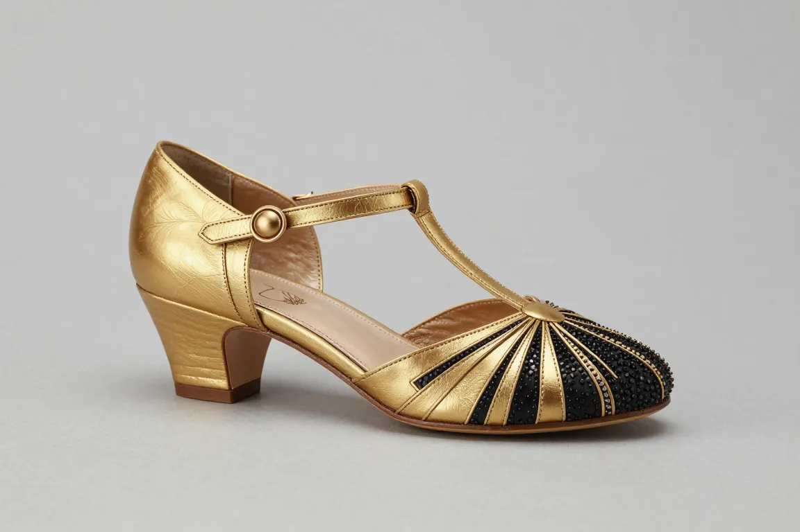

мода · 1920–1939 · также: Туфля с Т-образным ремешком, Туфля для чарльстона, Вечерняя туфля эпохи джаза
Туфля с ремешком эпохи джаза. Т-образный или одинарный ремешок через подъём, каблук луи или кубинский. Атлас, лайка или металлизированная кожа с вырезным или бисерным узором.

Главная идея
Танцующей женщине нужна туфля, которая держится на ноге: ремешок фиксирует подъём, а узор деко виден в каждом шаге.
Принципы дизайна
Застёгивайте туфлю Т-образным или одинарным ремешком через подъём, на пуговицу или маленькую пряжку.
Ставьте каблук 5–7 см, изогнутой формы луи или кубинской.
Делайте носок округлым, а союзку низкой, чтобы виден был подъём.
Вырезайте в союзке геометрический узор: солнечные лучи, шеврон или уступы.
Обтягивайте туфлю атласом, лайкой или металлизированной кожей, ловящей свет.
Подбирайте туфлю к платью по цвету; красьте атлас по образцу ткани.
Берите тонкую кожаную подошву, скользящую по полу.